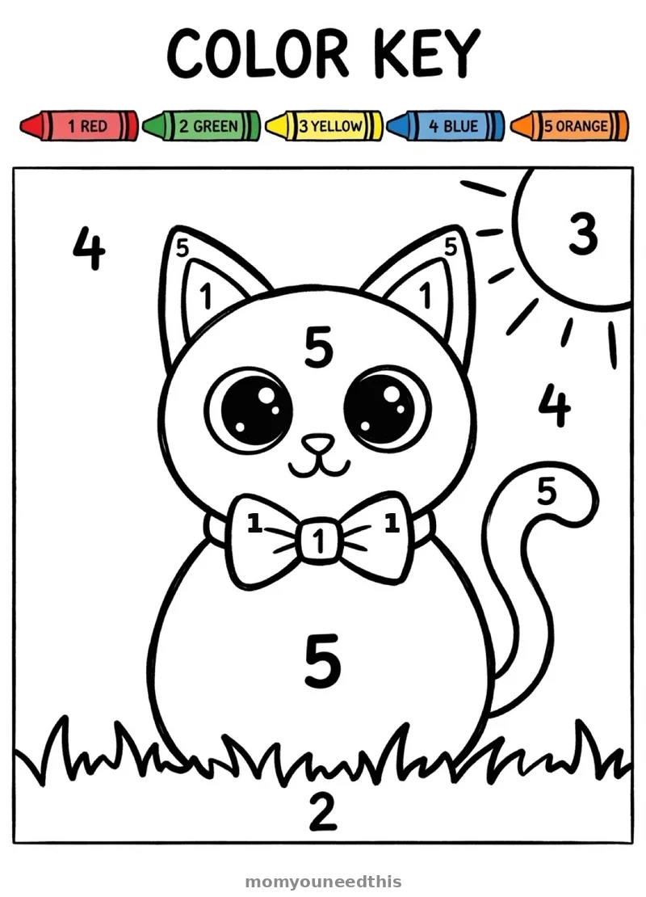

Cat Paint by Numbers Free Color-by-Number Printable, Ages 3+
Quick Answer
This free cat paint by numbers printable is made for ages 3 and up: big numbered sections, large clear numbers, and 5 colors on the shared color key — the full key, with no numbers skipped. The finished picture is a whole scene, not just a figure: an orange cat with red inner ears and a red bow, sitting in green grass under a yellow sun and a blue sky. Because the background is part of the sheet, the cat only “arrives” when the last sky section is filled — a satisfying ending for a first paint-by-numbers.
At a Glance
- Activity: Cat Paint by Numbers
- Ages: 3+
- Colors: 5 (1 = Red, 2 = Green, 3 = Yellow, 4 = Blue, 5 = Orange)
- Sections: Extra-large, numbered
- Supplies: Printed sheet + crayons
- Time: ~15 min

🎨 Color Key for This Sheet
This sheet uses 5 colors from the shared key. The numbers mean the same thing on every sheet — 1 is always red, 2 is always green, and so on.
| Number | Color | What it colors |
|---|---|---|
| 1 | Red | inner ears and bow center |
| 2 | Green | grass |
| 3 | Yellow | sun |
| 4 | Blue | sky |
| 5 | Orange | body, ears, and tail |
The cat's eyes are already colored black — no number inside them. Blue (4) colors the sky background.
🖍️ How to Color This Sheet
- Set out the crayons. All 5 colors from the key — red, green, yellow, blue and orange. This sheet uses the whole key, so the full set goes on the table.
- Point at the key together. “5 is orange” — find the cat's body and hold the orange crayon over it. The body is the biggest section on the sheet, and one demo there teaches the whole game.
- Let them work in any order. All the 5s first and watch the cat appear, or finish the grass and sky before the cat — both are correct. The rule is just: number matches color.
- Say the numbers and colors out loud. “That's a 1 — red, for the bow!” turns each section into a tiny number-and-color quiz.
🧠 What Kids Learn From This Cat Sheet
This cat sheet asks for the find-match-fill loop in its most rewarding form, because the picture is a scene. Finding a number can mean three different jobs: a detail (the red bow, a 1), a figure part (the orange body, a 5), or the world around it (the blue sky, a 4). Children learn to scan the whole page, not just the middle of it.
The color work is real, too. The cat is orange with red ears and a red bow — two warm colors side by side that are NOT the same, so the sheet quietly teaches color discrimination: red sections and orange sections look similar at a glance and different in the crayon box. Green grass and a yellow sun complete a picture that ends up looking like a storybook page.
And because every section belongs to something recognizable, mistakes are self-announcing: a blue patch in the grass looks wrong to the child before any adult says a word. That self-checking is the deepest skill paint-by-numbers teaches.
🎨 Make It Your Own
The color key is a starting point, not a rule. Once your child has colored the cat the “right” way — orange cat, red bow, blue sky — print another copy and let them do the wild version: a purple cat in pink grass, a blue cat under a green sun, a cat with rainbow stripes. The scene format makes wild versions funnier, because the whole world changes, not just the cat.
A middle option: keep the cat correct and swap only the world — an orange sky and a blue sun turn the same sheet into a sunset scene. Talking about WHY the new version looks strange (“the sky is not usually orange… except at sunset!”) is a little art lesson hiding inside the game.
🖍️ More Paint by Numbers Sheets
Try another sheet — same color key, new picture.
👨👩👧 A Quiet Activity That Actually Works
This cat sheet holds a preschooler's attention without a screen because it ends with a reveal: the background. Children who race through figures often slow down for the sky and grass, because filling them is what makes the cat pop. The last blue section of sky is a genuine finish line, and kids can feel it coming.
It works well as a calm-down activity after busy play, a waiting-room page, or a quiet morning starter while breakfast is made. Five colors means five crayons to manage — enough to feel like real art, few enough that nothing gets lost. Print two copies: one to follow the key, one saved for the wild version, and the sheet becomes a small afternoon project instead of ten minutes of coloring.
❓ Cat Paint by Numbers FAQs
How does the cat paint by numbers sheet work?
Each section of the cat picture has a number. Match the number to the color key (1 = Red, 2 = Green, 3 = Yellow, 4 = Blue, 5 = Orange), pick up that crayon, and color the section. The cat's body is orange (5), its bow and inner ears are red (1), the grass is green (2), the sun is yellow (3) and the sky is blue (4). When every numbered section is filled, the whole scene is finished.
What age can kids do this cat paint by numbers sheet?
Ages 3 and up. This sheet uses 5 colors and extra-large numbered sections, so preschoolers can manage it — the cat's body is one big forgiving area, and the smallest sections are the bow and ears. Younger toddlers can join in by coloring the grass and sky with the right crayons while a grown-up handles the details.
Is this cat paint by numbers printable free?
Yes — completely free, no signup or email required. Download the PDF, print it, and color it as many times as you like. Printing a second copy for a free-choice version is encouraged.
📚 Keep Exploring
- 🎨 All Paint by Numbers Sheets 8 free color-by-number printables for kids.
- ✏️ Drawing Tutorials 76 free step-by-step drawing tutorials for kids.
- 🎁 Free Resources Free printables and resources for busy moms.